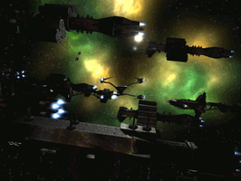

Freespace 2
Freespace 2 ist eine etwas ältere Raumkampfsimulation, die aber dank einer großen Community weiterlebt. Das Spiel ist seit April 2002 als Open Source verfügbar und wurde durch die Community vor allem in Sachen Grafik stark verbessert. Hieraus entstand das "Freespace 2 Open Source Code Project", das Freespace 2 erweitert und für Linux oder Mac OS portiert.
| Extrem detaillierte Modelle... | ...gewaltige Explosionen... | ...Mods wie Inferno:Alliance... |
Zu den neuen Features zählen u.a.:
Hardware Transform and Lighting, was Modelle mit erheblich höherer Komplexität erlaubt
Specular , Environment und Glow Mapping
Online Gaming über FS2NetD (Der Originaldienst von PXO wurde eingestellt)
Zusätzlich gibt es Pakete mit komplexeren Models und hochauflösenderen Texturen.
Spiel¶
Installation - Installation des Spiels von CD, dem Internet oder aus dem Quellcode
Konfiguration - Konfiguration der Grafik, Mods und Kampagnen sowie Problemlösungen
Total Conversions - Total Conversions basierend auf Freespace 2
|  |  |
| ...Total Conversions... | ... wie Diaspora. |


- Erstellt mit Inyoka
-
 2004 – 2017 ubuntuusers.de • Einige Rechte vorbehalten
2004 – 2017 ubuntuusers.de • Einige Rechte vorbehalten
Lizenz • Kontakt • Datenschutz • Impressum • Serverstatus -
Serverhousing gespendet von